?Як користуватися
Дві гілки
| Гілка | Що там |
|---|---|
lessons | Проєкт дитини. Починався з уроків 1–3 (тег lesson-03), далі дитина працює тут сама. Тут одразу лежать усі матеріали курсу (див. «Матеріали й варіанти»). Готові точки цю гілку не змінюють. |
lessons-solutions | Готові результати уроків 4–8 у простих «дитячих» графах (теги lesson-04 … lesson-08). Старі теги lesson-09 … lesson-15 зроблені ще в старому стилі, коли весь код був у гравці. Готові точки для нових уроків 9–16 — в роботі (гілка solutions-v2). |
В уроках 4–8 нові вузли лягали в граф PlayerRun окремими підписаними групами під вашими чотирма («Рух», «Гравець на землі», «Гравець в повітрі», «Стрибок зі звуком»). З уроку 9 кожен об'єкт має свій граф (Hazard, Pad, Finish, Star, Portal…), а в PlayerRun додаються лише групи, які гравець виконує сам: «Смерть», «Гравітація», «Корабель». Ваші чотири групи не змінювалися.
Подивитися готовий урок, не чіпаючи проєкт дитини
Найпростіше — дивитися знімки на цій сторінці. Щоб відкрити готовий урок у Unity, зробіть окрему копію в сусідній папці й відкрийте її через Unity Hub (перший імпорт займе кілька хвилин):
cd /home/dz/Projects/Unity/GeoGame
git worktree add ../GeoGame-lesson07 lesson-07
# прибрати копію потім:
git worktree remove ../GeoGame-lesson07Картинки й звуки
Усе, що знадобиться з 1-го по 16-й урок, разом із варіантами на вибір, уже лежить у проєкті дитини. Під час уроків нічого докачувати не треба. Що саме є, видно в розділі «Матеріали й варіанти».
Якщо дитина застрягла
Відкрийте знімок графа цього уроку й зберіть вузли разом. Якщо часу немає, можна продовжити з готової точки. Тоді попередня робота дитини залишиться у своїй гілці:
git switch lessons
git commit -am "Моя робота перед уроком 8" # зберегти, що є
git switch -c lessons-from-07 lesson-07 # продовжити з готового уроку 7
git checkout lessons -- Assets/Sprites Assets/Sounds Assets/Music Assets/Fonts # повернути всі матеріали
git commit -m "Усі матеріали"У готових точках lesson-NN лежать лише ті картинки, які потрібні саме для того уроку. Дві останні команди повертають повний набір матеріалів.
Як побудована година
Пошук вузлів
Вузли шукають англійською: правий клік по порожньому місці графа і почати друкувати назву. Підказки на сторінці записано так, як їх видно у Visual Scripting: On Trigger Enter 2D, Compare Tag, If. Змінні — це Get Variable/Set Variable типу Object (Variables на об'єкті; щоб дістати змінну гравця з графа іншого об'єкта, у порт об'єкта подаємо Collider), а в уроках 15–16 — Application. Усі написи в Canvas — TextMeshPro: шукайте вузли Text Mesh Pro UGUI.
★Матеріали й варіанти
Уся графіка й звуки курсу вже лежать у проєкті. Для кожної речі є кілька варіантів, тож дитина може вибрати свій: інший колір куба, блоки, фон, звук стрибка. Графіка й звуки — Kenney (CC0), музика — Juhani Junkala (CC0), шрифт Lilita One (OFL).
jumpSound, deathSound…) або в Audio Source. Якщо змінити префаб, оновляться всі його копії на рівні.Гравець — Assets/Sprites/Skins
6 кольорів × 4 форми. Обличчя — окремий спрайт поверх тіла (об'єкт Face), тож їх можна поєднувати як завгодно.
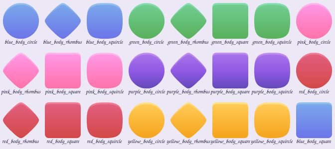
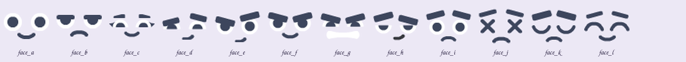
Блоки — Assets/Sprites
Для блоків, які розтягують (Draw Mode = Tiled), найкраще підходять block_* і bricks_grey: кожна клітинка — окремий цілий блок, тож будь-яка висота виглядає охайно.
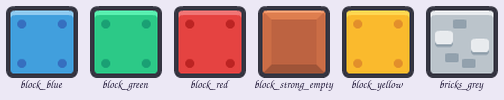
Земля 6 тем. У *_block_top зверху трава/сніг: розтягувати його можна лише в ширину. Для високого блока ставлять *_block_top зверху (висота 1), а під ним *_block_center.
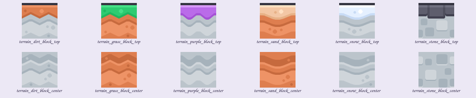
Платформи в повітрі: лівий край, середина, правий край.
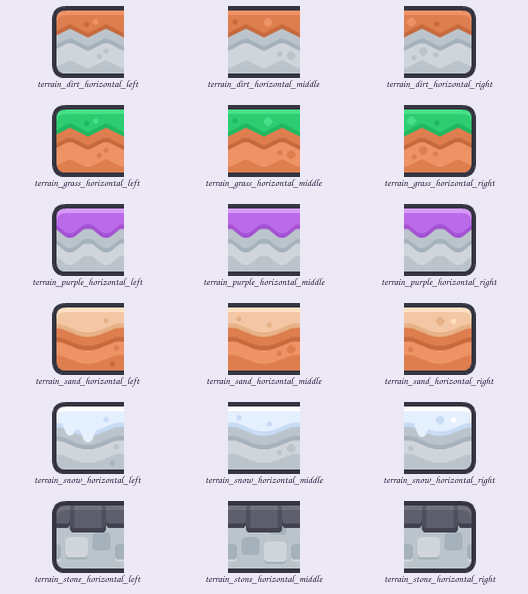
Перешкоди й предмети
Шипи, лава, пила (урок 13), батут (урок 8; spring_out — розтиснутий), зірка (урок 10), кристали, прапорець фінішу, двері (теж можуть бути фінішем), портали (уроки 12, 14), корабель (урок 14).
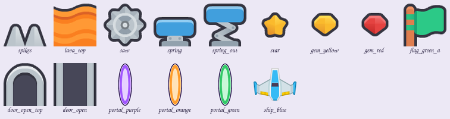
Фони
Поміняти можна в об'єкті Background усередині Main Camera.
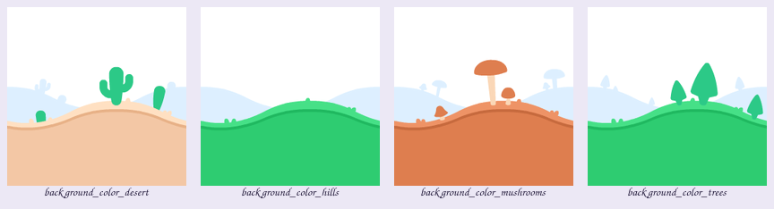
Інтерфейс — Assets/Sprites/UI
Кнопки, іконки, смуга прогресу (урок 15), зірки для меню.
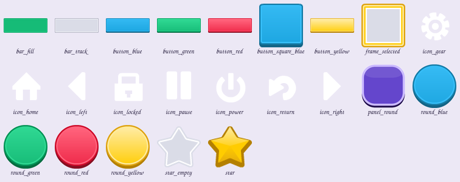
Звуки — Assets/Sounds і музика — Assets/Music
Кожен звук має три стилі: звичайний (sfx_), ретро (retro_) і м'який (soft_).
sfx_jumpretro_jumpsoft_jumpsfx_jump-highsfx_hurtretro_deathsoft_deathsfx_magicretro_winsoft_winsfx_coinsfx_gemui_clickmenu (Меню)level1 (Рівень 1)level2 (Рівень 2)level3 (Рівень 3)1–3Біг, стрибок, звук
Уже зроблено разом (тег lesson-03): куб біжить, стрибає тільки з землі й грає звук стрибка. Камера стежить за кубом.
Ці групи є основою для всіх наступних уроків. Зміна isAlive у групі «Рух» уже вміє зупиняти біг, а isGrounded вирішує, чи можна стрибати.
4Шипи: смерть і перезапуск
Ціль: торкнувся шипа — рівень починається спочатку.
Сцена
- Створити порожній об'єкт
Level— у ньому житимуть усі перешкоди. - Перетягнути префаб
Prefabs/SpikeуLevel. Позиції: x = 12, 22, 23, 34, 35; y = 0.5. - Показати дитині: у шипа
Box Collider 2Dмає галочку Is Trigger (крізь нього можна пройти, але гра дізнається про дотик), а Tag =Hazard(«небезпека»).
Граф (PlayerRun), нова група «Смерть від шипів»
Вихід Collider із події йде у вхід Compare Tag, а результат — в умову If. Для false — вузол Boolean без галочки.
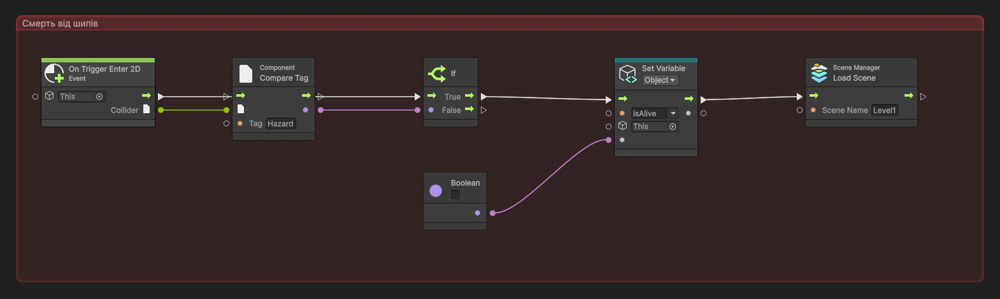
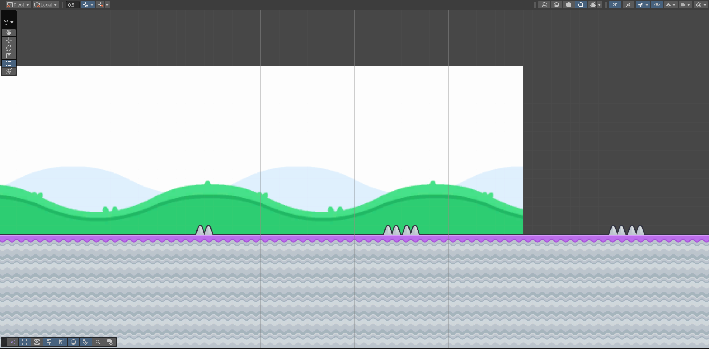
Перевірка
- Не натискати нічого: куб доїжджає до першого шипа, і рівень починається знову.
- Зі стрибками можна пройти всі шипи.
5Фініш і «ПЕРЕМОГА!»
Ціль: добіг до прапорця — куб зупиняється, на екрані великий напис «ПЕРЕМОГА!».
Сцена
- Префаб
Prefabs/Finishпоставити на x = 60 (його Tag =Finish). - На
Canvas: Canvas Scaler → Scale With Screen Size, 1920×1080. - Canvas → UI → Legacy → Text, назва
WinText: текст «ПЕРЕМОГА!», розмір 140, жовтий колір, додати компонент Outline. Вимкнути галочку біля назви об'єкта: напис схований. - У Variables гравця додати
winText(тип GameObject) і перетягнути тудиWinText.
Граф, група «Фініш»
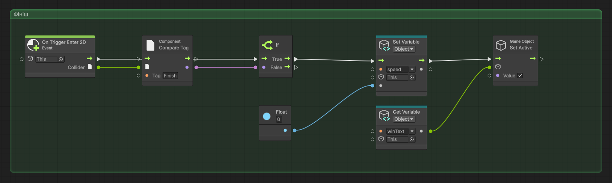
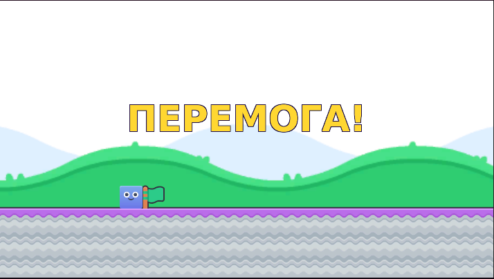
speed = 0, а не isAlive = false? Група «Рух» щокадру ставить швидкість = speed, тож speed = 0 зупиняє куб. А isAlive = false просто перестане оновлювати швидкість, і куб поїде далі.6Будуємо рівень
Ціль: власний рівень зі сходинками й шипами. Урок без графів: тільки сцена й тестування.
Префаб Block
- Новий об'єкт
Block: Sprite Renderer зі спрайтомblock_blue(або будь-якийblock_*,bricks_grey), Draw Mode = Tiled, Size 1×1. - Box Collider 2D з галочкою Auto Tiling: колайдер сам розтягується разом зі спрайтом.
- Перетягнути в
Prefabs. Довгий блок — змінити Size → Width, вищий — Height. - Можна зробити кілька префабів різних кольорів, і дитина сама вибере, які їй подобаються.
terrain_*_block_top: у режимі Tiled трава повторюється в кожному рядку, і блок висотою 2 виглядає як два шари один на одному. Готова точка lesson-06 ще використовує terrain_purple_block_top — дитина на уроці вибрала block_blue.Рівень у готовій точці
| x | Що |
|---|---|
| 44–50 | Блок висотою 1 |
| 50–56 | Блок висотою 2 (сходинка) |
| 66, 67 | Два шипи |
| 78–84 | Блок висотою 1 |
| 93; 102, 103 | Шип; два шипи |
| 115 | Фініш (перенести з 60) |
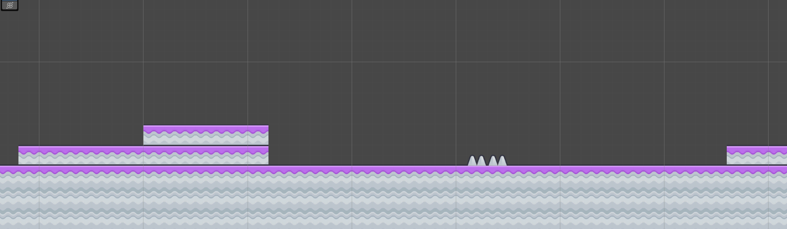
7Краса: обертання, вибух, звуки
Ціль: куб крутиться в стрибку; від шипа розлітається на квадратики зі звуком, а на фініші грає «чарівний» звук.
Сцена й змінні
- У Player додати дочірній Particle System
Boom:- Looping вимкнено, Play On Awake вимкнено.
- Start Speed 4–10, Start Size 0.2–0.4, колір — випадковий між синім і жовтим, Gravity Modifier 1.5, Simulation Space = World.
- Emission: Rate 0, один Burst на 40 частинок. Shape = Circle.
- Renderer: матеріал
Sprite-Unlit-Default(виходять квадратики, як у Geometry Dash), Order in Layer 20.
- Змінні гравця:
visual(GameObject Visual);spinSpeed= −360;boom(Boom);deathSound= sfx_hurt;winSound= sfx_magic.- Звуки можна вибрати інші:
retro_death/soft_death,retro_win/soft_win(див. «Матеріали»). Колір частинок теж на смак.
Нова група «Крутимось у стрибку»
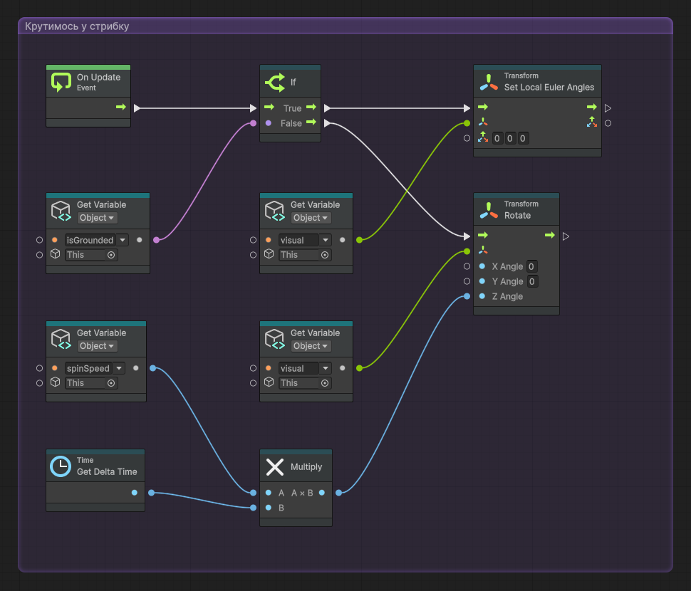
Смерть стає красивою
У ланцюжок смерті після Set isAlive = false вставити кроки:
- У події
On Trigger Enter 2Dпоставити галочку Coroutine, інакшеWait For Secondsне працюватиме. - В умову додати
AndзisAlive: смерть не спрацює двічі, якщо куб зачепить два шипи.
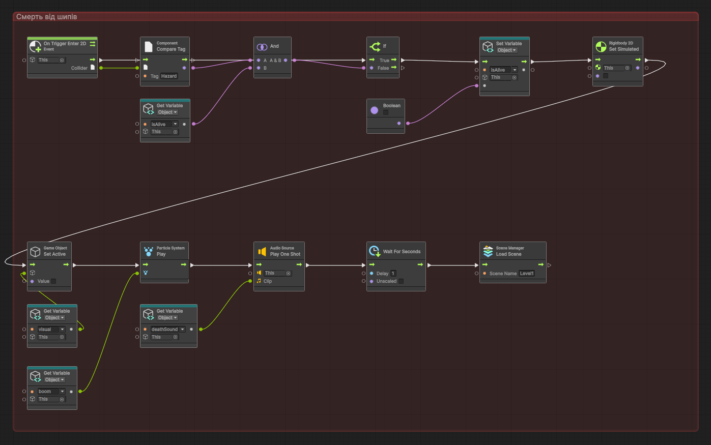
У «Фініш» після Set Active додати Play One Shot (winSound).
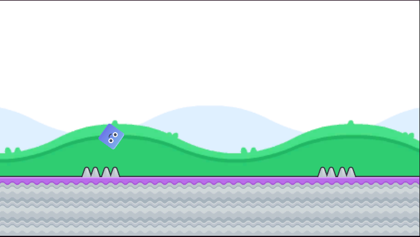
8Батут
Ціль: пружина підкидає куб дуже високо — на стіну, через яму з шипами.
Ассети
Уже в проєкті: spring.png, spring_out.png, sfx_jump-high.ogg.
Сцена
- Префаб
Pad:- спрайт
spring, ширина ≈ 1 клітинка; - Box Collider 2D з Is Trigger;
- новий Tag
Pad.
- спрайт
- Рівень:
- батут на x = 124, одразу за ним стіна-блок 127–133 висотою 3;
- батут на x = 145, за ним шипи на 147, 148, 149;
- фініш перенести на 162.
- Змінні:
padVelocity= 28,padSound= sfx_jump-high.
Граф, група «Батут»
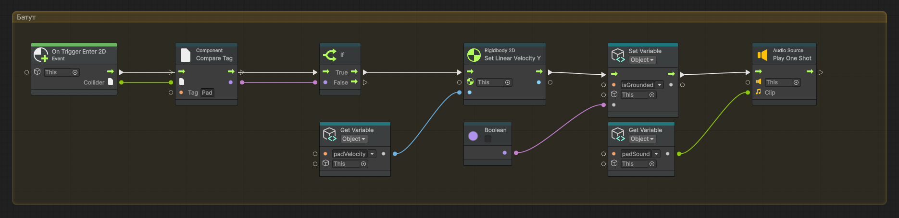
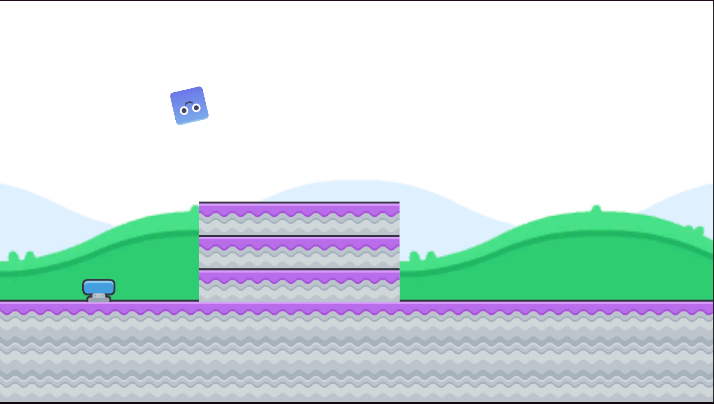
padVelocity і подивитися, що буде. З 24 куб у наших тестах приземлявся просто на шипи, тому в готовій точці стоїть 28.9Кожному об'єкту свій граф
Уже зроблено разом (20.10): код, що стосується шипів, батута й фінішу, переїхав з гравця на самі об'єкти. Тепер кожен об'єкт сам знає, що він робить із гравцем.
Як це влаштовано тепер
| Об'єкт | Граф | Що робить |
|---|---|---|
spikes, wall (префаби) | Hazard | Гравець торкнувся, і об'єкт каже йому «Смерть» |
spring | Pad | Підкидає гравця на power, грає sound, міняє спрайт на pressed |
Finish | Finish | Зупиняє гравця (speed = 0) і вмикає winText |
Player | PlayerRun | Рух, стрибок, кувирок і група «Смерть», яка чекає повідомлення |
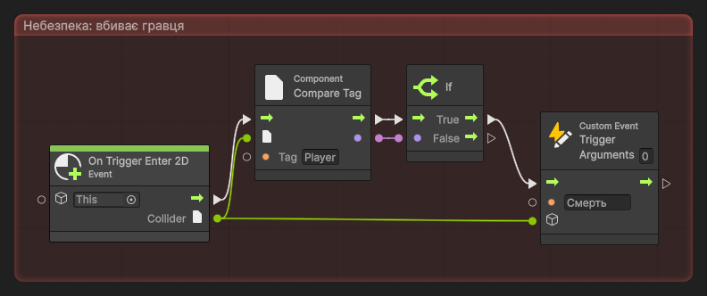
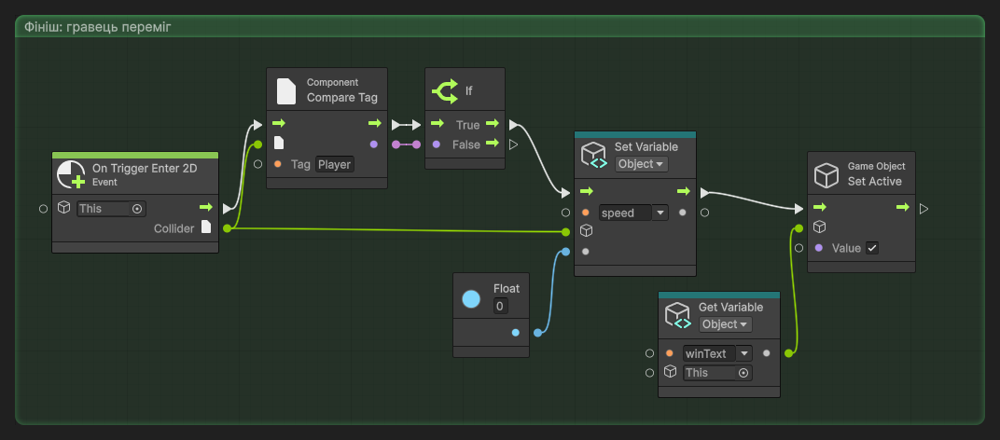
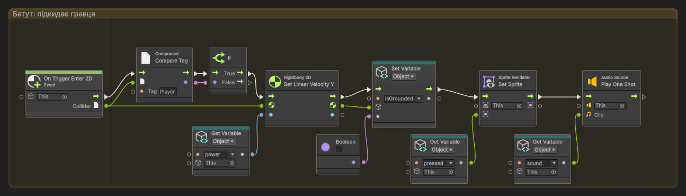
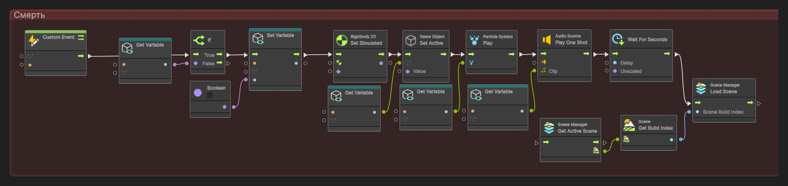
Шаблон для всіх нових об'єктів однаковий: On Trigger Enter 2D → Compare Tag «Player» → If → дія. Вихід Collider — це гравець, якого торкнулися. Від нього беремо його змінні (Get/Set Variable типу Object, порт об'єкта = Collider) або надсилаємо йому подію.
Wait For Seconds, має стояти з галочкою Coroutine. Без неї очікування мовчки не працює, і помилки в консолі немає.Чим це краще: нова перешкода — це будь-який спрайт + тригер + граф Hazard. У гравця нічого міняти не треба.
10Зірки й лічильник
Ціль: зірки можна збирати. Взяв зірку — вона зникає з дзвоном, а число в кутку екрана збільшується.
Ассети
Уже в проєкті: star.png, sfx_coin.ogg. Замість зірки можна збирати кристали gem_yellow/gem_red (звук sfx_gem).
Сцена
- Гравцю — нова змінна
coins(Integer, 0). Лічильник живе на гравці, а не на зірці, бо зірки зникають. - У Canvas — текст UI → Text - TextMeshPro з назвою
starTextі текстом «0», угорі екрана. Поруч — Image зі спрайтом зірки. - Префаб
star:- спрайт
star; - Circle Collider 2D з Is Trigger, радіус 0.35;
- Variables:
starText(тип Text Mesh Pro UGUI),starSound= sfx_coin; - Script Machine з новим графом
Scripts/Star.
- спрайт
- Зірки ставимо там, де куб пролітає: над шипами, на сходинці, на дузі батута.
Граф Star, група «Знайти напис»
Префаб не може тримати посилання на об'єкт зі сцени, тому кожна зірка на старті сама знаходить напис за назвою.
Граф Star, група «Зірка»
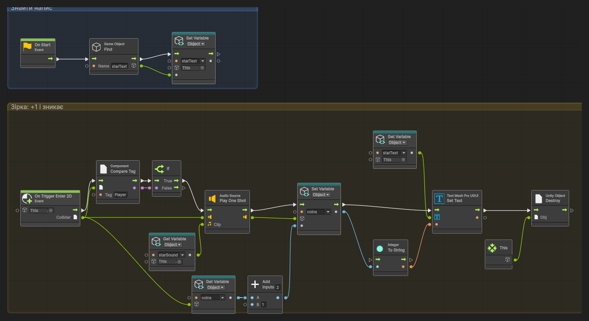
- Звук граємо на гравці:
Audio Source: Play One Shot, ціль —Collider. Якщо грати на самій зірці, звук обірветься, бо вона одразу зникає. Set Variable coinsбере гравця з правого виходуPlay One Shot, як на батутіisGroundedбере його зSet Linear Velocity Y. Так не треба тягнути ще одну довгу лінію від Collider.Get Variable coinsстоїть під ланцюжком і бере гравця прямо з Collider.Get Variable starTextставимо надSet text, аTo String— під ним: тоді лінії не перехрещуються.Destroy— останнім, бо після нього граф зірки вже не працює.
- Число не можна подати прямо в текст: помилка Cannot convert from 'System.Single' to 'System.String'. Між числом і
Set textставимоTo String. - Текст у Canvas — це Text Mesh Pro UGUI. Вузол
Text Mesh: Set Textі типText Mesh Pro(без UGUI) — для тексту в самій сцені, з ними буде Missing target object або There is no 'TextMesh' attached. У пошуку вузлів набираємоText Mesh Pro UGUI→Set text.
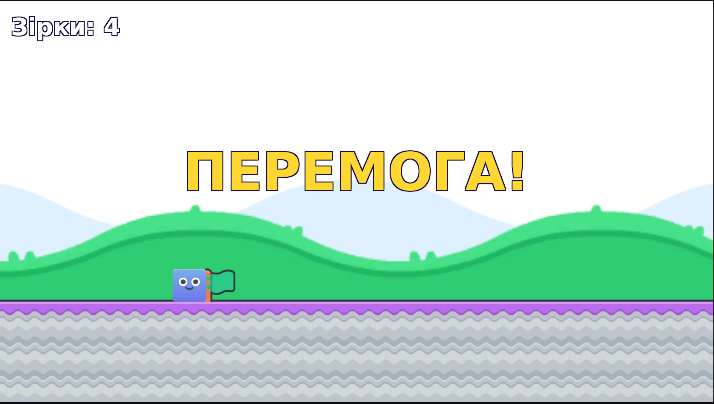
11Меню
Ціль: гра починається з меню. Натискаєш «ГРАТИ» — запускається рівень. Після перемоги через 3 секунди — знову меню.
Сцена Menu
- File → New Scene, зберегти як
Scenes/Menu. - Камера: Orthographic, Size 6. Дочірній
Backgroundз фоном пагорбів, як у рівні. - UI:
Canvas(Scale With Screen Size 1920×1080) іEventSystem(з Input System UI Input Module);- заголовок «GEO GAME» (Text - TextMeshPro) — жовтий з обводкою;
- кнопка
PlayButton«ГРАТИ».
- На кнопку — Script Machine з новим графом
Scripts/PlayButton. Граф живе на самій кнопці, як і всі наші графи. - File → Build Profiles / Build Settings: сцени
Menu(перша) іLevel1.
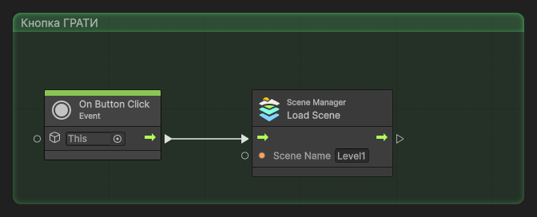
Повернення в меню: граф Finish
Відкриваємо граф Finish на фініші. В On Trigger Enter 2D ставимо галочку Coroutine, а в кінець ланцюжка дописуємо:
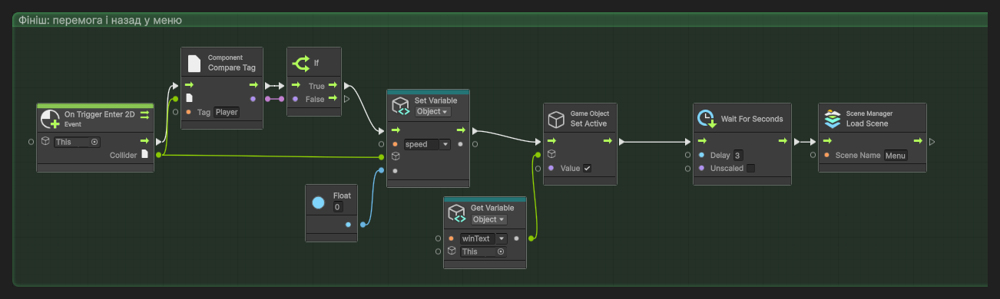
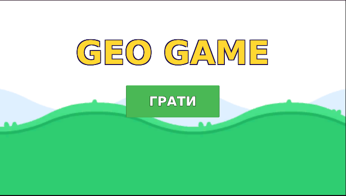
Menu перед натисканням Play.12Портал гравітації
Ціль: пролетів через фіолетовий портал — куб падає на стелю й біжить догори дриґом. Другий портал повертає все назад.
Ассети
Уже в проєкті: portal_purple.png, sfx_magic.ogg.
Сцена
- Префаб
GravityPortal:- спрайт
portal_purple; - Box Collider 2D 1×3 з Is Trigger;
- Variables:
message(String) = «Гравітація»,sound= sfx_magic; - Script Machine з новим графом
Scripts/Portal.
- спрайт
- Продовжуємо рівень за фінішем (фініш переносимо далі):
- стеля — довгий блок на висоті y = 7, приблизно 40 клітинок;
- перший портал біля землі (y = 1.5) на початку стелі;
- другий портал біля стелі (y = 5.5) в її кінці;
- на стелі — 2–3 шипи, повернуті на 180° (y = 6.5). Це звичайний префаб
spikes, тож вони вже вбивають.
Граф Portal (на порталі)
Портал нічого не знає про гравітацію. Він лише каже гравцю слово зі своєї змінної message. Тому той самий граф знадобиться ще для двох порталів в уроці 14.
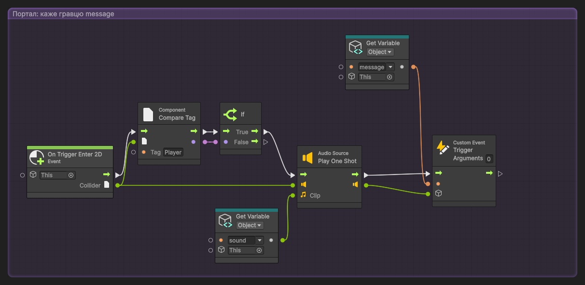
message стоїть над вузлом, бо вхід «назва» верхній, а гравець приходить знизу збокуГраф PlayerRun, нова група «Гравітація»
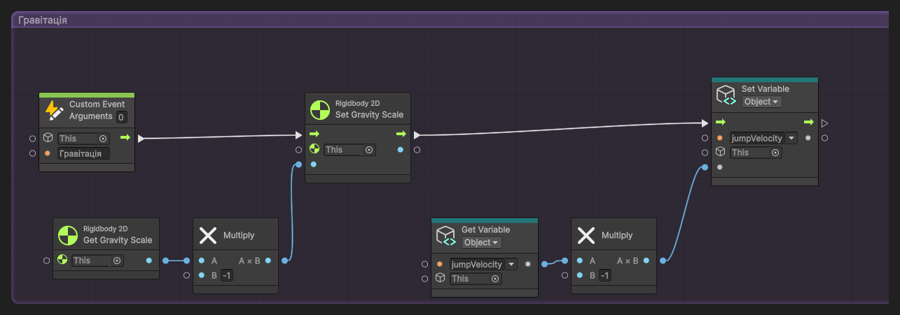
jumpVelocity.message на порталі літера в літеру, разом з великою літерою. Інакше портал «кричить», а гравець не чує, і помилки немає.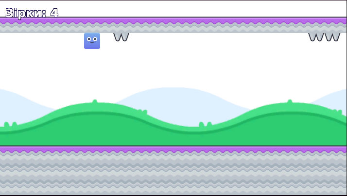
13Рухома пила
Ціль: пила крутиться й їздить туди-сюди. Нових вузлів немає — тільки вікно Animation і готовий граф Hazard.
Ассети
Уже в проєкті: saw.png.
Кроки
- Порожній об'єкт
MovingSaw, у ньому дочірнійSaw:- спрайт
saw; - Circle Collider 2D з Is Trigger;
- Script Machine з графом
Hazard— той самий, що на шипах. Пила вже вбиває!
- спрайт
- Виділити
MovingSaw, Window → Animation → Animation → Create →Animations/SawMove. - Натиснути червону кнопку запису:
- кадр 0:00 — Saw x = 0, обертання Z = 0;
- кадр 2:00 — x = 2;
- кадр 4:00 — x = 0, обертання Z = −1440.
- Перевірити, що в кліпі стоїть Loop Time. Зробити з
MovingSawпрефаб і поставити 2 пили на рівні, між ними ≥ 16 клітинок.
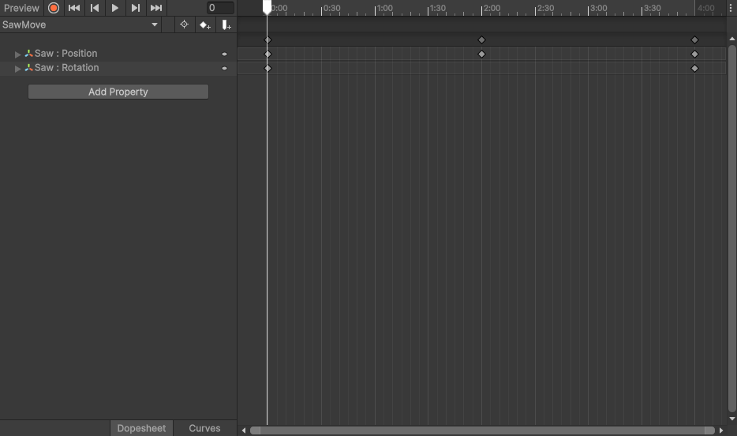
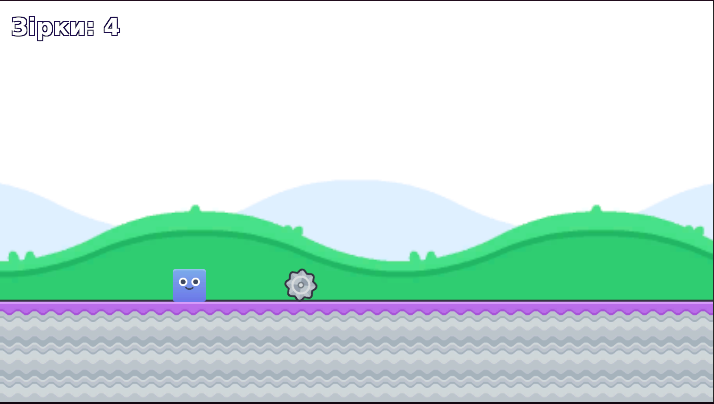
14Корабель
Ціль: помаранчевий портал перетворює куб на корабель. Тримаєш кнопку — летиш угору, відпускаєш — падаєш. Зелений портал повертає куб.
Ассети
Уже в проєкті: ship_blue.png, portal_orange.png, portal_green.png.
Сцена й змінні
- У Player — дочірній
Shipзі спрайтомship_blue, повернутий на −90° (носом управо). Вимкнений. - Змінні гравця:
ship(Ship),isShip= false,shipPower= 45. - Два нові портали — копії
GravityPortalз іншим спрайтом і іншимmessage:ShipPortal:portal_orange, message = «Корабель»;CubePortal:portal_green, message = «Куб», розтягнутий на всю висоту.
Portal. Нічого нового в ньому робити не треба. - Рівень: портал корабля біля землі, далі стеля на висоті 8 і стовпи-блоки по черзі знизу (висота 4) і згори (від 4.5 до 8) кожні 8 клітинок, наприкінці — портал куба, потім фініш.
Граф PlayerRun, групи «Стати кораблем» і «Стати кубом»
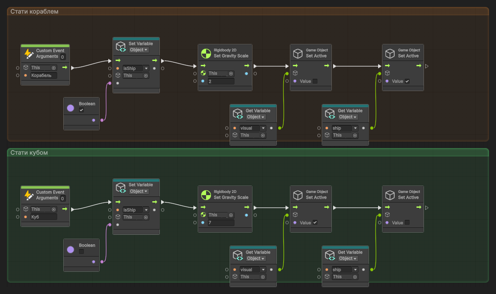
Граф PlayerRun, група «Корабель летить»
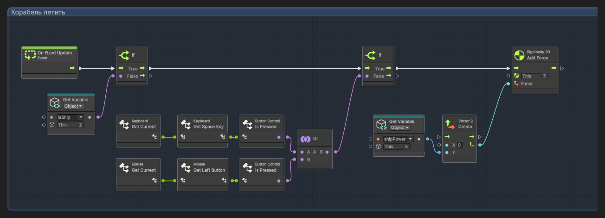
Умову «затиснута» можна скопіювати з групи «Стрибок зі звуком»: там те саме Is Pressed. Політ лишається в гравці, бо це його власне вміння, а не дія порталу.
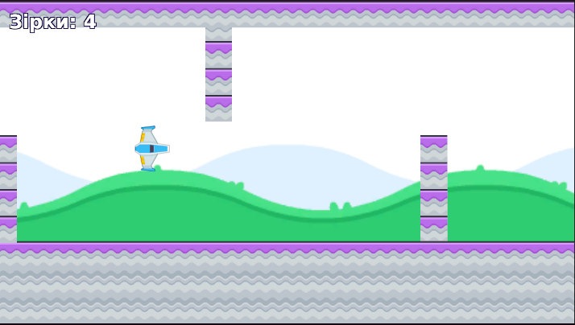
15Спроби й прогрес
Ціль: угорі видно «Спроба 5» і смужку, що заповнюється дорогою до фінішу.
Ассети
Уже в проєкті: UI/bar_track.png, UI/bar_fill.png.
Спроби: граф на самому написі
- Текст
AttemptText(Text - TextMeshPro) у правому верхньому куті. - На нього — Script Machine з графом
Scripts/Attempts.
Звичайні змінні обнуляються, коли рівень перезапускається. Змінні Application живуть, поки працює гра, — саме те для лічильника спроб.
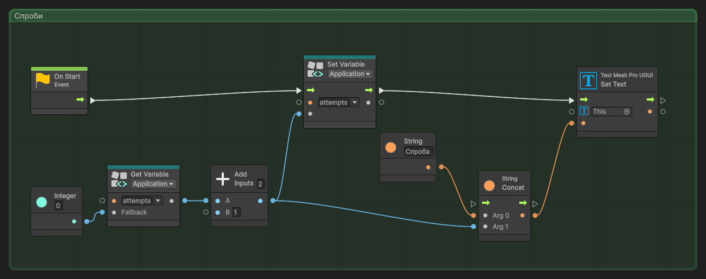
Текст беремо з самого об'єкта: у Text Mesh Pro UGUI: Set text порт цілі лишаємо This.
Get Variable (Application) у порт Fallback треба підключити окремий вузол Integer 0. Вписане прямо в порт значення Visual Scripting ігнорує, і гра падає з помилкою «Missing input value for 'fallback'».Прогрес: граф на смужці
- UI Image
ProgressBar(bar_track, Sliced, 700×44, угорі по центру). У ньому дочірнійFill: bar_fill, Image Type = Filled, Horizontal, Fill Amount 0. - На
Fill:- Variables:
player(Transform гравця),finish(Transform фінішу); - Script Machine з графом
Scripts/Progress.
- Variables:
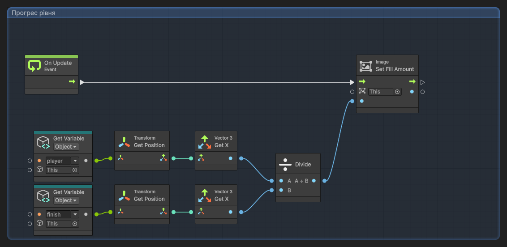
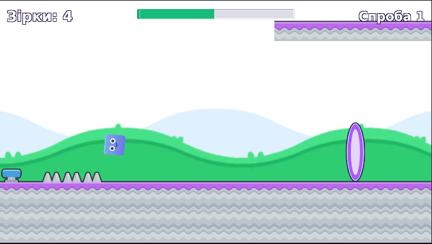
16Скіни й музика
Ціль: у меню вибираєш колір куба (синій, зелений, рожевий), і в грі куб саме такий. У меню й у рівні грає музика.
Ассети
Уже в проєкті: 24 скіни в Sprites/Skins, 12 облич, музика menu і level1–level3. У прикладі три кнопки (синій, зелений, рожевий), а дитина може вибрати будь-які кольори й форми.
Меню: кнопки скінів
- Три кнопки
Skin1–Skin3, картинка кожної — спрайт скіна. - На кожній кнопці:
- Variables:
skin(Sprite),clickSound= sfx_coin; - Audio Source (Play On Awake вимкнено);
- Script Machine з одним спільним графом
Scripts/SkinButton.
- Variables:
Як і з порталами: граф один, а кнопки відрізняються лише своєю змінною skin.
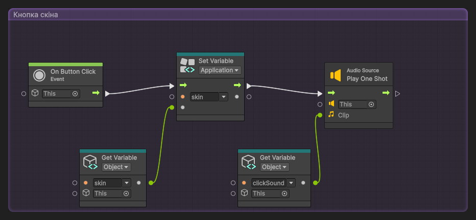
Рівень: граф на Visual
Скін міняє той, хто його носить, — дочірній об'єкт гравця Visual (на ньому Sprite Renderer куба). Даємо йому Script Machine з графом Scripts/Skin:
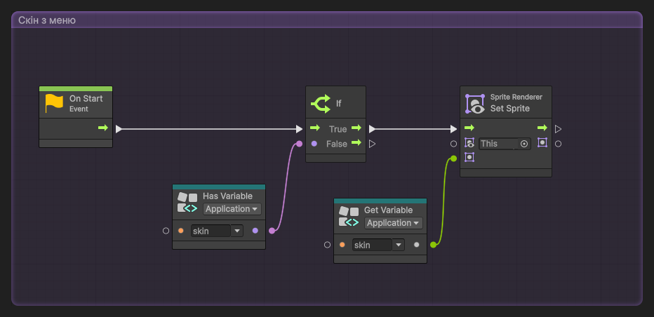
Перевірка Has Variable потрібна, щоб гра не ламалася, коли запускаєш одразу рівень, без меню.
Музика
На Main Camera в обох сценах — Audio Source: кліп menu або level1, Loop ✓, Play On Awake ✓, Volume 0.4. Графи не потрібні. Музика — Juhani Junkala, ліцензія CC0.
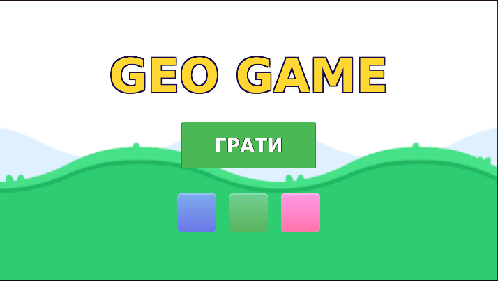
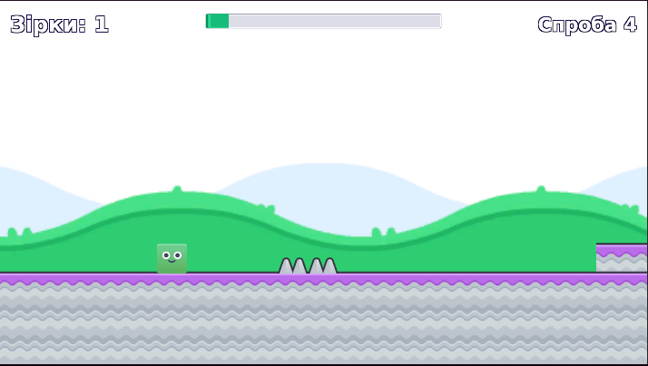
17Свій рівень
Ціль: дитина сама будує рівень із усього, що вміє, і дає пограти родині.
- Зберегти копію сцени:
Level1→ Ctrl+D →Level2, прибрати в ній усе зLevel. - Спершу намалювати рівень на папері: де батут, де портал, де корабель.
- Будувати з префабів по шматочку й одразу проходити. Кожен префаб приносить свій граф, тож шипи, зірки й портали працюють одразу. Правило 4 / 5 / 8 клітинок допомагає.
- Додати сцену в Build Settings, а в меню — другу кнопку з
Load Scene «Level2»(той самий граф, що вPlayButton, тільки інша назва сцени). Фініш другого рівня теж веде в меню — графFinishуже вміє. - Тест на друзях: дати пограти, мовчки дивитися, де вони гинуть, і полагодити найнечесніше місце.
Hazard), кристал на 5 очок (як зірка, але coins + 5), швидкісний портал (Portal з message «Швидко» і група в гравці, що ставить speed = 12).